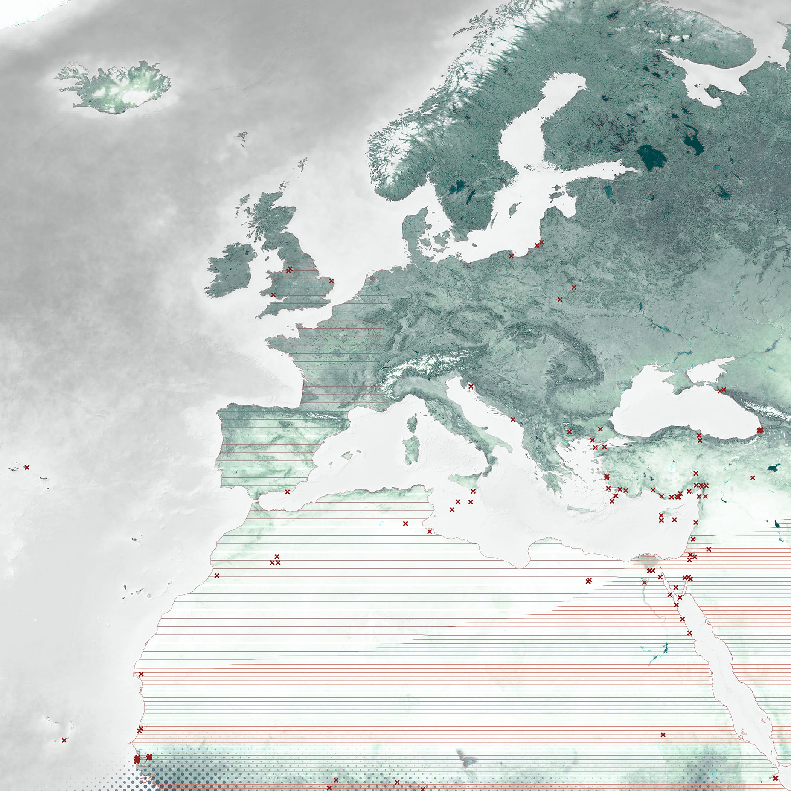

Atmospheric ecologies of the
globe skimmer dragonfly
Thattan thalaparanthal thappathu mazhai
When a dragonfly flies low, a shower is sure to follow.1
Across the Indian subcontinent, dragonflies are used
as weather predictors, the height at which they fly
indicating the likelihood of rainfall. As exothermic
beings, dragonflies sense subtle changes in
temperature, wind, light and humidity and adjust their
behaviour accordingly. Their fluctuating movements
providing humans situated in specific places with an
indication of impending weather patterns, facilitating
meteorological understandings through trans-species
communication.
Globe Skimmers and
the monsoon
Dragonfly species Pantala flavescens, also known as Globe Skimmers or Wandering Gliders, have adapted to exploit monsoon weather patterns. Clouds of these dragonflies move en masse following seasonal monsoon weather fronts. As aquatic organisms that rely on freshwater to breed, Globe Skimmers follow the rainy conditions enabled by wet monsoon winds. Breeding in fresh water pools as they migrate, laying their eggs where monsoon rains fall, their lifecycle is intertwined with the mobile materiality of the monsoon.
R.J. Rowe, ‘Pantala flavescens (Fabricius, 1798)’, 2014. Source: WikiCommons.
Intercontinental
multi-generational migration
By aligning themselves with monsoon winds, Globe Skimmers are transported at high speeds allowing them to cover vast distances. It has recently been discovered that Pantala flavescens travel across the Indian Ocean from India to Africa and back again.2 The immensity of this journey is even more dramatic when considering the Globe Skimmer’s tiny size. Although monsoon winds facilitate this epic journey, as dragonfly lifespans are short, no single individual completes the entire circuit. The journey is achieved by approximately four generations. Dragonflies at each stage of the migration depend on the monsoon and the bodies, lives and movements of those that preceded them.
Above: Pantala flavescens above
Chennai shores. Source: Yuvan Aves.
Below: Hypothesized multi-generational
migratory journeys of Pantala
flavescens
from India to Africa using seasonal
meteorological patterns, namely the
ITCZ and the Somali Jet Stream.

Meteorological indicators
As Globe Skimmers migrate they are observed by people, their presence often coinciding with the arrival of the rains or seasonal change. In Kerala, the Onam harvest festival is celebrated during August and September, when the ravages of the rains are over, and the monsoon retreats from South India. An explosion of dragonflies, including Pantala flavescens, occurs during this time; leading to them being known as Onathumbi, or dragonflies that appear around Onam. Due to their affective presence, dragonflies feature in South Indian cinema and popular songs. Globe Skimmers are also known as harbingers of the monsoon in the Maldives, Namibia, Japan and Hong Kong.
Above: ‘Thumbi thumbi vaa vaa’ sung by Santa P. Nair, from the film Koodappirappu (1956), with lyrics by Vayalar. The song is a child’s poignant query to his friend, the dragonfly, asking whether he has met his father in the big city during his great wanderings.
Global meteorological dispersal
Genetic studies of dragonfly DNA indicate that Pantala flavescens may be a global, panmictic population.3 This rare phenomenon suggests that gene flow is occurring between dragonflies from different geographic regions on a worldwide scale. As many of these regions are monsoonal, linked by planetary scale atmospheric circulations, it is possible that Globe Skimmer movements are facilitated by the global monsoon system which provides an inter-connected aerial range.
Below: Speculative map showing relations between the global dispersal of Pantala flavescens and the global monsoon system.

Globe Skimmers and
climate change
Although the Globe Skimmer is a widespread and highly mobile species, due to its reliance on monsoon winds and rains it will be affected by changing weather patterns. There are indications that the northeast monsoon, on which the dragonfly relies for its India to Africa migration, is likely to become more unpredictable in the near future. There are already indications that the migratory range of the dragonfly may be shifting due to climatic change, with new European sightings in recent years. Dragonfly sensitivity to atmospheric alterations make them barometers for global climate change.
Map of the expanding range of Pantala flavescens, showing recent European sightings.

Human-dragonfly
entanglements
In tracing the migratory routes of this dragonfly, the expanding human impact on the globe becomes apparent. The future of Pantala flavescens and other dragonfly species will be influenced by land use changes particularly the loss of wetlands and the shifting monsoon weather patterns brought about by human-induced climate change. Anthropogenic alteration to the Earth’s surface constitutes a major threat to biodiversity with further expansion expected to accelerate loss.
1 Tamil proverb relayed during Chennai fieldwork.
2 C. Anderson, ‘Do dragonflies migrate across the western Indian Ocean? Journal of Tropical Ecology, vol. 25, 2009, pp. 347-358.
3 D. Troast et al., ‘A Global Population Genetic Study of Pantala flavescens’, PLoS
One, vol. 11, no. 3, p. 2.
Video clips of Pantala flavescens recorded during fieldtrips to Chennai, Dhaka and Yangon between 2017 and 2019.
Text by Beth Cullen.
Design by Jonathan Cane.
Atmospheric ecologies of the globe Skimmer dragonfly
Video by Beth Cullen.
Globe Skimmers and the monsoon
Video by Beth Cullen.
Intercontinental multi-generational migration
Drawing by John Cook.
Sources: Climatic Data: NOAA/NCEP CFSv2 Climate Forecast System + NASA
Earth Observations; Aerial Imagery: NASA Blue Marble Imagery + NASA WorldView;
Topography + Bathymetry: ETOPO1 Global Relief Model; Regional Dragonfly
Migrations: C. Anderson, ‘Do dragonflies migrate across the western Indian
Ocean?’, Journal of Tropical Ecology, vol. 25, 2009, pp. 347-358, J.W. Chapman et al.,
‘Long-range seasonal migration in insects: mechanisms, evolutionary drivers and
ecological consequences’, Ecology Letters, no. 18, 2015, pp. 293.
Meteorological indicators
Video by Beth Cullen.
Global meteorological dispersal
Drawing by John Cook.
Sources: Climatic Data: NOAA/NCEP CFSv2 Climate Forecast System + NASA
Earth Observations; Aerial Imagery: NASA Blue Marble Imagery; Topography +
Bathymetry: ETOPO1 Global Relief Model
Dragonfly Sightings: Global Biodiversity Information Facility (GBIF); Monsoonal
Regions Calculations/Spatial Definition: World Climate Research Programme
(WCRP), ‘The Global Monsoon Systems’, ND, p. 1; ITCZ: Modern Position of the
Intertropical Convergence Zone (ITCZ) in July and January: H. Cheng et al., ‘The
Global Paleomonsoon as see through speleothem records from Asia and thee
Americas’, Climate Dynamics, 39, 2012, pp. 1047; Dragonfly Territory 2006: A.
Raschka, ‘Distribution of Pantala Flavescens’, Wikipedia, 2006; Dragonfly Territory
2017: J. Tann, ‘Distribution of the dragonfly, Pantala Flavescens’, Wikipedia, 2017.
Globe Skimmers and climate change
Drawing by John Cook.
Sources: Climatic Data: NOAA/NCEP CFSv2 Climate Forecas t System + NASA
Earth Observations; Aerial Imagery: NASA Blue Marble Imagery; Topography +
Bathymetry: ETOPO1 Global Relief Model; Monsoonal Regions Calculations/Spatial
Definition: World Climate Research Programme (WCRP), ‘The Global Monsoon
Systems’, ND, p. 1; Dragonfly Territory 2006: A. Raschka, ‘Global distribution of
Pantala Flavescens’, Wikipedia, 2006; Dragonfly Territory 2017: J. Tann, ‘Distribution
of the dragonfly, Pantala Flavescens’, Wikipedia, 2017; Dragonfly Sightings: Global
Biodiversity Information Facility (GBIF), P. Buczynski et al., ‘From Southern Balkans
to Western Russia: Do First Polish Records of Pantala flavescens indicate a
migration route?’, Journal of the Entomological Research Society, vol. 21, no. 1,
2019, p. 12.
Human-dragonfly entanglements
Video by Beth Cullen.
Footnote
Videos by Beth Cullen and Lindsay Bremner.